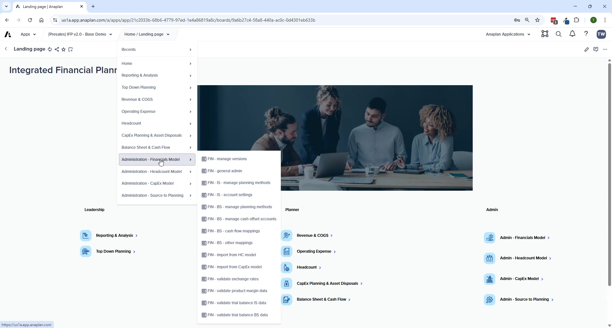

Anaplan Application Framework
How deployment works, the 4 generated models, and the configuration question flow
What the Application Framework Does
- Generates all 4 IFP models (Admin, FP, HC, CE) based on configuration answers
- Provisions UX pages, modules, lists, actions, and ADO links automatically
- Enables upgrades — future versions deployed centrally without manual rebuilds
- Enforces constraints — validates configuration choices (e.g., 8-dimension limit)
The Four Generated Models
| Model | Purpose | Always Generated? |
|---|---|---|
| Admin | Central configuration layer — source-to-planning mappings, metadata | Yes — always |
| Financial Planning (FP) | Revenue/COGS, OpEx, Balance Sheet, Cash Flow, Top-Down, Reporting | Yes — always |
| Headcount (HC) | Job-level workforce planning and cost calculations | Yes — delete if choosing GL-level option |
| Capital Expense (CE) | Asset planning, depreciation, disposal modeling | Yes — delete if choosing GL-level option |
The Application Framework always generates all 4 models. If you choose GL-level planning for HC or CapEx instead of the dedicated model, the model is still generated — you must delete it manually after generation.
Configuration Question Structure

The wizard has two layers:
- Top-Level Questions — define foundational structure across all 4 models: which dimensions to include, which modules to deploy, multi-currency, headcount approach, CapEx approach
- Model-Specific Questions — fine-tune each model: FP planning scope, HC settings, CE settings
Between the two layers: the Hierarchy Configuration screen — where you set level counts and rename each hierarchy before generation.
Hierarchy Configuration
- Add, delete, or rename hierarchy levels across all models at once
- Changes propagate automatically to all models where the hierarchy is used
- Minimum 2 levels, maximum 8 levels per model
- Level count shown = combined levels across all selected models (Entity at 3 levels in FP + HC + CE = 9 total)
Use the EXACT same name in the configuration question response AND the hierarchy rename. A mismatch causes generation failures where modules and line items won't be renamed correctly throughout the model.
After Generation
Generation is the starting point — a significant set of post-generation tasks are required before the application is usable. See Post-Generation Checklist for the full list.
The Application Framework has documented known issues — ADO links that fail to generate, UX elements that don't generate correctly, and naming inconsistencies. All have workarounds. None are blockers — plan for them in your project schedule.